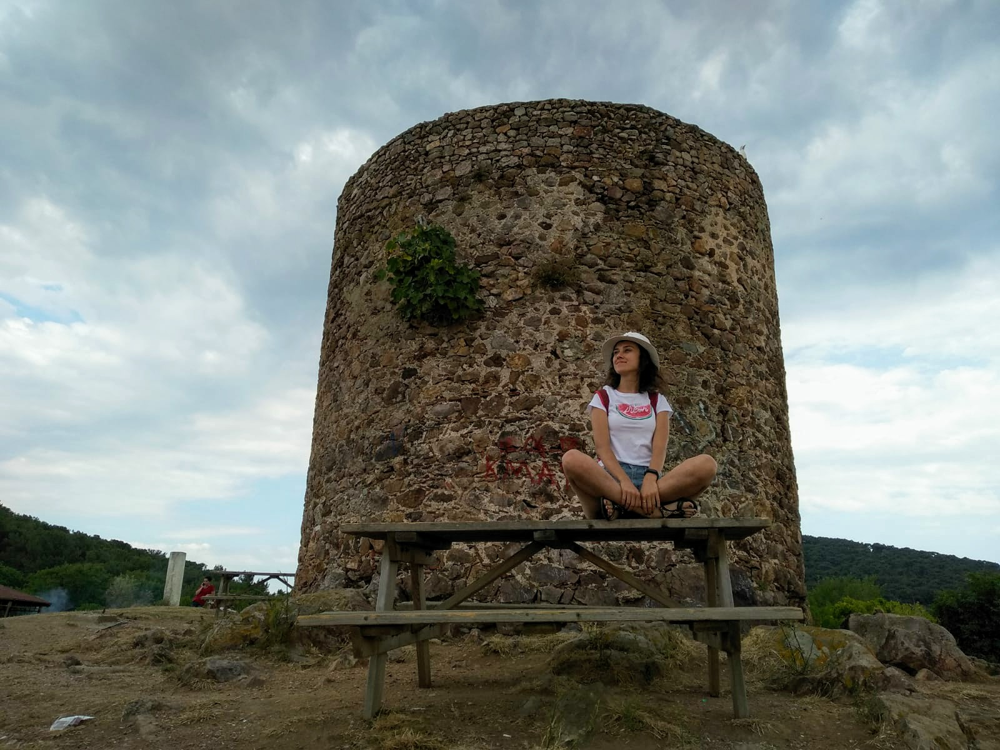
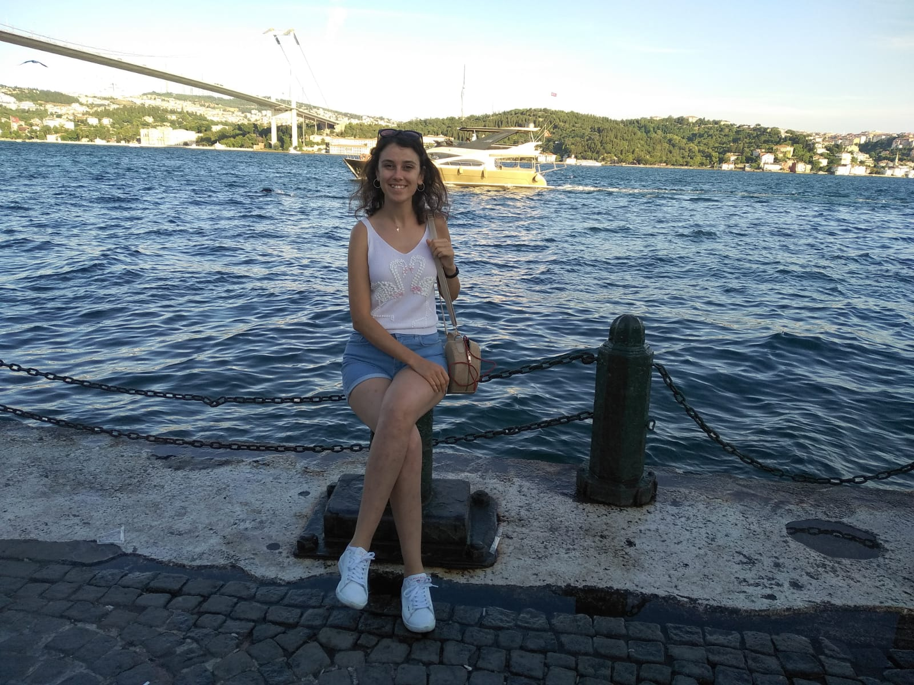

Heybeliada

Summer,2019
Heybeliada or Heybeli Ada (Greek: Χάλκη, Halki) is the second largest of the Prince Islands in the Sea of Marmara, near Istanbul.
It is officially a neighborhood in the Adalar district of Istanbul, Turkey.
The large Naval Cadet School overlooks the jetty to the left as you get off the ferry or seabus.
There are two interesting pieces of architecture on the grounds of the school.
One is Kamariotissa, the only remaining Byzantine church on the island, and more importantly the last church to be built before the conquest of Constantinople.
The other is the grave of Edward Barton, the second English Ambassador to be sent to Constantinople by Elizabeth I of England, who spent his last days in Heybeli in order to escape the plague raging through the city in 1598. His remains were later relocated to the British Cemetery in the Haydarpaşa quarter of the Üsküdar district.
Ortaköy

Summer,2019
Ortaköy (literally Middle Village in Turkish) in Greek known as Agios Fokas (Άγιος Φωκάς) in the Byzantine period and Mesachorion (Μεσαχώριον, meaning "middle village") later, is a neighbourhood, formerly a small village, within the Beşiktaş district of Istanbul, Turkey, located in the middle of the European bank of the Bosphorus.
Selimiye Mosque
 Winter,2019
The Selimiye Mosque (Turkish: Selimiye Camii) is an Ottoman imperial mosque, which is located in the city of Edirne (formerly Adrianople), Turkey. The mosque was commissioned by Sultan Selim II, and was built by the imperial architect Mimar Sinan between 1568 and 1575.[2] It was considered by Sinan to be his masterpiece and is one of the highest achievements of Islamic architecture.
Winter,2019
The Selimiye Mosque (Turkish: Selimiye Camii) is an Ottoman imperial mosque, which is located in the city of Edirne (formerly Adrianople), Turkey. The mosque was commissioned by Sultan Selim II, and was built by the imperial architect Mimar Sinan between 1568 and 1575.[2] It was considered by Sinan to be his masterpiece and is one of the highest achievements of Islamic architecture.
Anıtkabir
 Summer,2019
Anıtkabir (literally, "memorial tomb") is the mausoleum of Mustafa Kemal Atatürk, the leader of the Turkish War of Independence and the founder and first President of the Republic of Turkey.
Summer,2019
Anıtkabir (literally, "memorial tomb") is the mausoleum of Mustafa Kemal Atatürk, the leader of the Turkish War of Independence and the founder and first President of the Republic of Turkey.
It is located in Ankara and was designed by architects Professor Emin Onat and Assistant Professor Ahmet Orhan Arda, whose proposal beat 48 other entries from several countries in a competition held by the Turkish Government in 1941 for a "monumental tomb" for Atatürk.